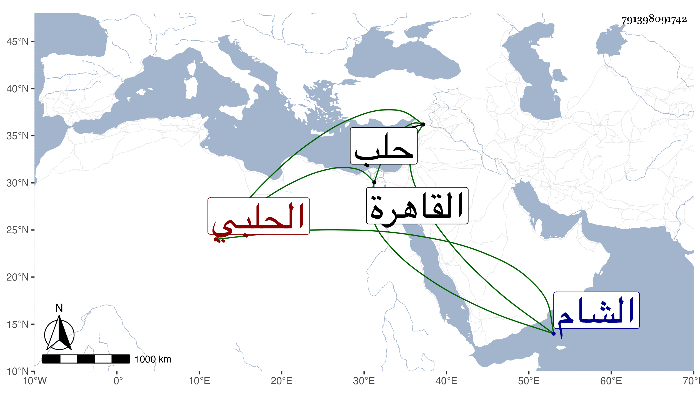

0902Sakhawi.DawLamic.ITO20230111-ara1.EIS1600.791398091742
Biography ID: 791398091742
6
عبد الله بن إبراهيم بن محمد بن خليل الجمال أبو حامد وأبو غانم بن الحافظ البرهاني أبي الوفا الحلبي أخو أنس وأبي ذر الماضيين . سمع على أبيه وشيخنا وآخرين ومما سمعه على أبيه جزء الجعفي ثم سمع معنا بحلب في سنة تسع وخمسين على ابن مقبل وعبد الواحد بن صدقة وحليمة ابنة الشهاب الحسيني وشيخ الشيوخ السيد العلاء الهاشمي ومحمد بن أبي بكر شيخ قرية جبرين في آخرين ، وقدم القاهرة بعد في سنة إحدى وستين فسمع على العلم البلقيني جزء الجمعة وعلى المحلى والسيد النسابة في آخرين وكذا سمع بالشام وغيرها وحدث وسمع منه بعض الطلبة وجلس شاهدا ومسه بعض مكروه افتئاتا من بعض طلبة أبيه وكان متميزا في الرمي وصنف فيه وله اعتناء بطريق الفقراء بحيث استقر في مشيخة الشيوخ بعد محمد بيرق الرفاعي مع دين وعدم غيبة . مات في أواخر سنة تسع وثمانين وخلف أولادا .
